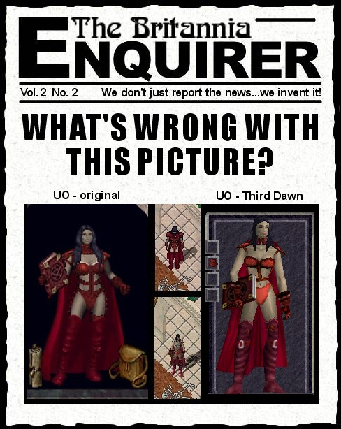
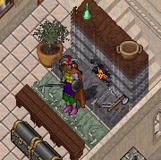
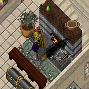
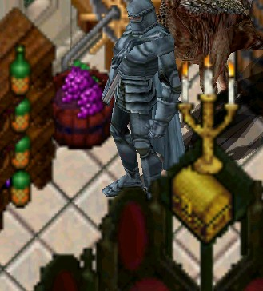
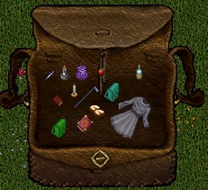
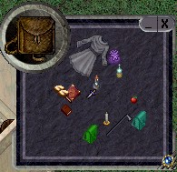
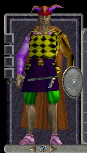

Now you can call me politically incorrect, sexist, or whatever else you want, but frankly, if the bowlegged stick-insect on the right looks better to you than the curvaceous babe on the left then it's time to check in to your local Lenscrafters for your yearly eye exam. Which brings me to the topic of this edition of the Enquirer. Oh, and since I started writing this I read about the cancellation of UO2. Well as far as I am concerned they cancelled the wrong program. They should have kept on developing UO2, given up on UO3D, and left Ultima Online (2D) the hell alone!
Note: Since I captured the image for this edition there has been at least one more revision to the female character to try to make her look less frumpy. Her body is getting better but the expression on her face still looks like she just swallowed a bug. Keep trying, guys, maybe some day she will look nearly as good as the 2D version.
Just so you know where I stand, so far everything I have seen of the new UO Third Dawn graphics frankly SUCK! Who the hell asked for a 3d add-on for UO in the first place? I remember we wanted Necromancy (and didn't get it), veteran rewards (on hold while they work on UO3D), and a ton of other things but a 3D interface for a 2D game wasn't high on any list I saw. I thought that a true 3D version of UO was what UO2 was supposed to be all about? And before those same old androids start shouting "IT'S A BETA" every time someone has the unmitigated gall to have a "gasp" negative opinion about the changes, let me remind you that UO Third Dawn has "gone gold", i.e. is supposedly ready to ship. Before you complain about me complaining, take your UO Third Dawn character and just walk him back and forth while you watch the paperdoll. I mean people who have just had a "Radical Colonectomy" might walk like that, but nobody I know does. If you walk in real life like your UO Third Dawn character does then all I can say to you is “Get thee to a healer, quick”.
I know I am gonna step on a few toes here but frankly Scarlet, I don't really give a damn. I think the whole Third Dawn/Localization thing that is going on now is a big mistake. If they wanted to add new lands they could have done it without going the 3D route. For starters, at the normal viewing scale any detail on the new characters is lost and the result looks crappy. And when you zoom in to get a better look at the 3D characters the rest of the unconverted graphics get all fat and blurry, not to mention the field of view is too small to play at that magnification anyway.
|  2D  3D |  Zoom |
For another take on the graphics and animation, check out this snippet from a message I read on the Crossroads Boards that pretty well sums up a lot of peoples impressions:
---snip---
“Logged on last night to see what it looked like again after hearing they are releasing it. Nothing changed from when I first got it working weeks ago! I REALLY thought that the graphics I was seeing were just cheap versions of what was really to come. And the animation. Oh my lord the animation. Half the time I run around on my horse, it's legs don't move and it looks as if he's on wheels. There are times when I'm doing stuff while standing in the same spot, yet my character is walking away. Basically walking in place. Any time you see a monster moving, it always seems to take a couple extra paces, but not go any where. And what's with that nasaly grunt/whine noise the liches make. They HARDLY sound intimidating. The animation though. Just can't get over the animation. I really don't get the 3D aspect of things. Why'd they do it? You don't get 3 dimensions when looking at stuff. Well, except when you rotate your paperdoll. The monsters still only face in the same old 8 directions. Still the top down view. What changed? Other than mongbats getting HUGE wings, and gargoyles looking like miniature dolls, what was the point? Ok, the trees look better. What's with the bright white highlighting too? Can we turn up the gamma ANY higher on that one?”
---end snip---
I am not one of those people who believe that just because you slap the title 3D on something and bang in a few blocky looking polygonal characters, that you have in some way improved the game. Face it, UO was not designed to be a 3D game, it was designed to be a 2D game and should be left that way. It's bad enough that since Richard Garriott and Richard Vogel and the rest left that EA/OSI has lost all focus on what the Ultima series was all about, without adding the insult of turning what started out a medieval rpg and turning into some generic, melting pot, sanitized, mechanical shadow of what it was, just so you can sell it in every goddamn market in the world with minimal changes to allow for different languages.
Oh and then there is the atmosphere of the game, I mean have you seen the new backpack and container gumps? Instead of bags, trunks and barrels we have little square characterless windows with a picture of what they are supposed to represent in the upper left corner. And how bout some of the new menus? Damn! UO is starting to look more like a word processor than an rpg.
|  2D |  3D |
And now "Localization". Some of my readers commented on my recent toon about the changes to text handling supposedly preventing those long macro strings by indicating to me that they thought it meant I was all in favour of the new co-called "localization" changes which threaten to gut the last vestiges of colorful language from the game for the sake of mass marketing worldwide with a minimum of bother. Well, nothing could be further from the truth. I for one definitely do see a difference between an "eminently accurate silver kryss of vanquishing" and a "kryss 30:18:24" whatever. And another thing, those little stories in the messages in a bottle were fun to read. Hey, here's an idea! Why don't we eliminate speaking all together and just have those little balloons pop up like in the Sims with silly little drawings on them. If I decide to play on a shard in Germany and don't understand every word that is said, so what? When I went to Germany in real life that is EXACTLY what it was like. Some people spoke English, many didn't, so I picked up enough German to order some food, find my way around, say hello, goodbye, please and thanks, etc. and concentrated on immersing myself in the life and countryside. In case you hadn't noticed the lands of UO are called Britannia and the main city is Britain. To my mind that brings a vision of an Anglo-Saxon environment where there is a good chance that English will be the language of choice. Hell, Britain was successfully conquered seven times by the Romans, Normans, Saxons, etc. and none of the conquerers spoke English, didn't seem to hinder their progress! And please don't try and paint me with the racist handle cuz it just won't wash. It has nothing to do with racism and everything to do about thousands of people who with eyes wide open, bought into this game, knowing it was primarily created for the North American Market and have supported it for over three years. If you want to sell the goddamn game in Tonga then get yourself a Tongan Translator on staff and get busy turning out the Tongan version, fire up a Tongan server and stock up the shelves at the Tongan branch of Office Depot, just leave the North American shards alone. (no offence to Tonga intended)
As you may have been able to tell by now, I feel pretty strongly on this subject and I will tell you why. For nearly three years I have devoted countless hours to ImaNewbie and this web site. I feel the current changes threaten Ima's entire way of life. I mean next thing you know Ima's cheery "Hail and Well Met" will be intercepted by a translation server and translated into Hello Person, Me Hope You Feel Good. I am finding less to laugh about these days in UO and fear that the end may be in sight for a game I love dearly, and that troubles me greatly. I have enjoyed the company and camaraderie of literally hundreds of people over the years, many who have left and of late, more than every before since I first started playing that are considering if they still feel like financing a game that has lost its sense of direction.
So there is my two cents on the subject. I know nothing I say will have any effect whatsoever on the direction that the game will take but at least I have managed to vent for now. I plan to hang on for a bit and see what develops so ImaNewbie will still be around for the immediate future at least. I am working on some new 'toons and maybe a return to the saga of ImaNewbie and Irma so be sure to stop back and check for new stuff.
"Of course that's just my opinion ... I could be wrong."
later ... Tryon
|  | Last Words Who's idea was it to use Buddy Ebsen (Jed Clampett on the Beverley Hillbillies) for the paperdoll? |